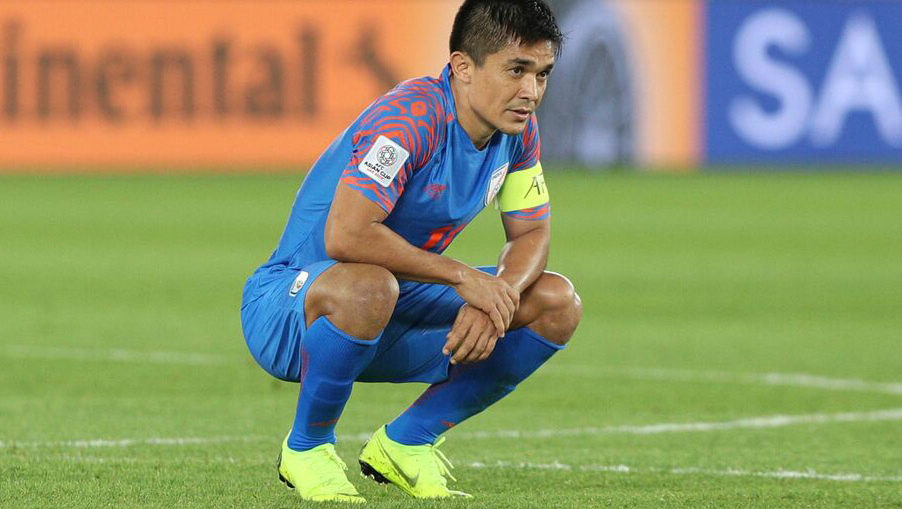

Posted at Date: January 15, 2019
Credit : রাইট স্পোর্টস ওয়েব ডেস্ক
সুনীল মেনে নিলেন, ‘বড্ড রক্ষণাত্মক হয়ে পড়েছিলাম’

চার মিনিট। শুধুই ২৪০ সেকেন্ড! ভারতীয় ফুটবল আর ইতিহাসের মাঝে ছিল ওই চার মিনিট। হুঁশিয়ার ছিলেন কাণ্ডারি প্রণয় হালদার, ম্যাচজুড়ে। একটা ভুল, বিদায়। খেলার জগৎ বড় নিষ্ঠুর! ফুটবলাররা হতাশ, বিপর্যস্ত, ক্রুদ্ধও। রাগ নিজেদের ওপরেই। তা থেকেই হতাশা। দুমড়েমুচড়ে গিয়েছেন। এত কাছে এসে এভাবে ফিরতে হবে, ভাবতে পা্রছেন না এখনও।
দ্বিতীয়ার্ধে সবাই মিলে ড্রয়ের জন্য রক্ষণাত্মক খেলাই কি অকালবিদায়ের কারণ? প্রথম দুটি ম্যাচে যাঁরা আক্রমণে উঠে ত্রাহিত্রাহি রব তুলে দিয়েছিলেন, হঠাৎ দশজনই নিজেদের অর্ধে নিচে নেমে বক্সে ভিড় করে থাকা ফুটবলে কেন? তেমনই কি নির্দেশ ছিল কোচের? স্টিফেন কনস্টান্টাইন, দায়িত্ব ছেড়ে দেওয়ার ঘোষণার পর শারজায় সংবাদমাধ্যমকে জানিয়েছেন, ‘ইচ্ছে করে ড্রয়ের জন্য খেলতে চাইনি। বাহরিন দুর্দান্ত শক্তি নিয়ে শুরু করেছিল, তাড়াতাড়ি গোল পাওয়ার লক্ষ্যে। খেলা চলতে চলতে হয়ত দলের অনভিজ্ঞতার কারণে হয়ে গিয়েছিল তেমন… আমরা ক্রমশ পিছিয়ে যেতে থাকি নিজেদের অর্ধে। আরও পেছনে যেতে যেতেই শেষে শাস্তি। তবু, মনে হয়, দুর্ভাগ্যই কারণ। প্রায় ৯০ মিনিটই রক্ষণে দুর্ভেদ্য ছিলাম। ৭০-৭৫ মিনিট নাগাদ ফুটবলারদের মনে হতেই পারে, আর তো কিছুক্ষণ, আমরা পারব ওদের আটকে দিতে। বাহরিন তখন ছ’জনকে তুলে এনেছে ফরোয়ার্ডে, চারজন মিডফিল্ডারই ওপরে। খুবই খারাপ লাগছে, কিন্তু, এমন ম্যাচও পেনাল্টি-গোলে হেরে যাওয়াটা নিষ্ঠুর, সবার কাছেই।’
কোচের অলিখিত ক্যাপ্টেন, ভারতের এই তরুণ দলের নেতা সুনীল ছেত্রীরও এক সুর। ইএসপিএন ডট কম-কে বলেছেন, ‘সত্যিই ড্রয়ের জন্য খেলতে নামিনি আমরা। হ্যাঁ, অস্বীকার করব না, অবচেতনে সবাই জানতাম, এক পয়েন্ট পেলেই নকআউটে চলে যাব। টিম মিটিংয়ে সবাই বলেছিলাম, জয়ের জন্যই ঝাঁপাব, বল তাড়া করব শুরু থেকেই। খেলা অনেকটা গড়িয়ে যাওয়ার পর হঠাৎ যেন সবাই বুঝতে পারে, ৬০ মিনিট, ৭০ মিনিটে, এখনও ০-০, এভাবেই চলুক, চলতে দেওয়া হোক। ক্রমশ আমরা পিছিয়ে, আরও পিছিয়ে যেতে থাকি নিজেদের অর্ধে। যদি ৮৯ মিনিটে ওই পেনাল্টিটা না হত, আপনারাই হয়ত বলতেন, রক্ষণে দুর্ভেদ্য থাকল ভারত! কিন্তু, এমন একটা দিন যখন কিছুই ঠিকঠাক হল না।’
থাইল্যান্ডের বিরুদ্ধে জোড়া গোলের নায়ক অবশ্য মেনে নিয়েছেন, ‘রক্ষণে যদিও দুর্ভেদ্যই ছিলাম, দল হিসাবে বড্ড রক্ষণাত্মক হয়ে পড়েছিলাম। বলের দখল নিজেদের পায়ে আরও বেশিক্ষণ রাখা উচিত ছিল। কখনও কখনও ড্রয়ের দিকে তাকিয়ে খেললে এমন হয়, যে-শিক্ষা পেলাম আমরা। আশা করি এই হার আমাদের আরও শক্তিশালী করে তুলবে।’ ওই খোলসে বেশি ঢুকে-থাকার কারণেই হয়ত ৯০ মিনিটে মাত্র তিনবার বাহরিনের গোলমুখী শট ভারতের। চার দিন আগেই যাঁরা আয়োজক সংযুক্ত আরব আমিরশাহির বিরুদ্ধে ছ’বার গোলের নিশ্চিত সুযোগ তৈরি করেছিল তাঁদের কাছে এতটা রক্ষণাত্মক মনোভাব কি অপ্রত্যাশিত নয়?
সুনীল বলেছেন, ‘সাহসী হতেই হত সবাইকে, আমাকেও। বলের দখল রেখে ধৈর্য ধরে খেলতে হত। ওরা মরিয়া ছিল বলেই। মাত্র দুজনকে পেছনে রেখে খেলছিল। যদি বল রাখতে পারতাম, তিন-চারটে পাস খেললেই দুয়ের বিরুদ্ধে দুই ওদের বক্সে, যা আমরা তখন মাঠে হয়ত ভেবে উঠতে পারিনি। শুধু ডিফেন্স করে গেলাম! যা যা বিপক্ষে যেতে পারত, সবই গেল। অন্য ম্যাচটাও (ইউএই-থাইল্যান্ড) ১-১, হারলাম ৯০ মিনিটের পেনাল্টি-গোলে। শিক্ষা হল, তবে বিরাট মূল্য দিয়েই।’ ১৯৬৪ সালে চুনী গোস্বামীর ভারত দ্বিতীয় হলেও তখন চারটি দেশই অংশ নিয়েছিল। ফলে, গ্রুপ লিগের বাইরে যাওয়ার প্রয়োজন পড়েনি। এবার সুযোগ এসেছিল, গ্রুপ পর্ব পেরিয়ে নকআউটে পা দেওয়ার। হল না ওই একটিই ভুলে। সুনীল যেমন বলেছেন, ‘৯৫ শতাংশে হবে না। এমন ম্যাচে ১০০ শতাংশই ঠিক হতে হবে। পাঁচ শতাংশ ভুল মানেই সর্বনাশ।’
Top Stories

Calcutta Sports Journalists' Club requests the pleasure of your company at its annual awards functionMore...

Jasprit Bumrah has been declared fit and he will now be available for selection for India's third Test against England at Trent Bridge. More...

Ronaldo has increased Juventus' standing among Europe's elite. More...